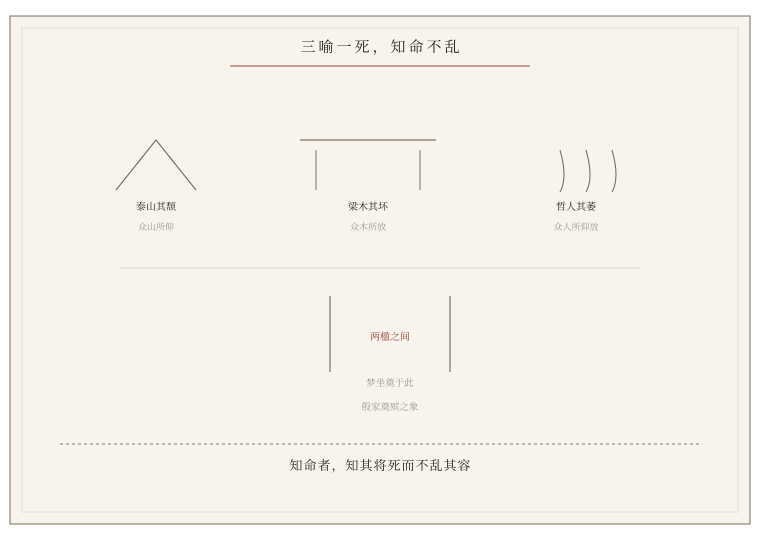

檀弓上 · 三·四十八 · 第 251 课
孔子蚤作，负手曳杖，消摇于门，歌曰：「泰山其颓乎？梁木其坏乎？哲人其萎乎？」既歌而入，当户而坐。子贡闻之曰：……夫子曰：「赐，尔来何迟也？夏后氏殡于东阶之上，则犹在阼也；殷人殡于两楹之间，则与宾主夹之也；周人殡于西阶之上，则犹宾之也。而丘也，殷人也。予畴昔之夜，梦坐奠于两楹之间。夫明王不兴，而天下其孰能宗予？予殆将死也。」盖寝疾七日而没。注「欲人之怪己」「以三代之礼占己梦」「明圣人知命」。
说什么事：一个人清早起身，反手拖杖，在门外徘徊，唱了三句歌；七天之后就死了。
落在哪一层：礼，兼及礼意与死生。论「知命」。
为何编在此位：上节论学礼之失，此节见礼之至者。礼至则知命，知命则不乱。
【经】孔子蚤作，負手曳杖，消搖於門，歌曰：「泰山其頹乎？梁木其壞乎？哲人其萎乎？」既歌而入，當戶而坐。子貢聞之曰：「泰山其頹，則吾將安仰？梁木其壞，哲人其萎，則吾將安放？夫子殆將病也。」遂趨而入。夫子曰：「賜，爾來何遲也？夏后氏殯於東階之上，則猶在阼也；殷人殯於兩楹之間，則與賓主夾之也；周人殯於西階之上，則猶賓之也。而丘也，殷人也。予疇昔之夜，夢坐奠於兩楹之間。夫明王不興，而天下其孰能宗予？予殆將死也。」蓋寢疾七日而沒。
【注】作，起。欲人之怪己。泰山，众山所仰。梁木，众木所放。哲人亦众人所仰放也，以上二句喻之。萎，病也。蚤坐，急见人也。觉孔子歌意。坐则望之。以三代之礼占己梦。是梦坐两楹之间而见馈食也。言奠者，以为凶象。畴，发声也；昔犹前也。孰，谁也；宗，尊也。两楹之间，南面乡明，人君听治正坐之处。今无明王，谁能尊我以为人君乎？是我殷家奠殡之象，以此自知将死。明圣人知命。
【疏】此一节论孔子自说死之意状。「杖以扶身，恒在前面用，今乃反手却后，以曳其杖，示不复杖也」；又夫子礼度自守、貌恒矜庄，今乃消摇放荡以自宽纵，「皆是特异寻常」，故云「欲人之怪己」。众木，榱桷之属，依放横梁乃存，故云「众木所放」。「泰山」「梁木」并指他物，「哲人其萎」指夫子之身，以二物比己，故云「以上二句喻之」。君子寻常不自当户，今歌而入即当户而坐，是「急欲见人」。夏与周并言「犹」者，既死无所知识，孝子不忍以生礼待之，犹尚阼阶以为主、犹尚西阶以为宾客；殷人殡于两楹之间不云「犹」者，庾蔚云「东阶西阶平生宾主所行礼之处，故云犹；两楹之间生无此礼，故不云犹」。时夫子梦见馈食，不梦凶奠，但奠礼既死之后未葬之前，柩仍在地，未立尸主，唯奠停饮食，故云奠。两楹之间，人君听治正坐之处，「今无明王，谁能尊我以为人君乎？是我殷家奠殡之象」。
蚤作 注「作，起」。早起。
负手曳杖 反手于背而拖杖。疏「杖以扶身，恒在前面用，今乃反手却后，以曳其杖，示不复杖也」。
消摇 注「亦作逍遥」。宽纵自放之状。
当户而坐 对着门坐。注「蚤坐，急见人也」。
安仰、安放 向何处仰望、依放。注「放，依也」。
两楹之间 两柱之间。注「人君听治正坐之处」。
畴昔 注「畴，发声也；昔犹前也」。前夜。
坐奠 坐而见馈食之奠。注「言奠者，以为凶象」。
宗予 以我为尊。
寝疾七日而没 卧病七日而死。注「明圣人知命」。
孔子清早起身，反手拖杖，在门外徘徊，唱道：「泰山要塌了吧？梁木要坏了吧？哲人要病了吧？」唱完进屋，对着门坐着。子贡听见了，说：「泰山塌了，我们仰望什么？梁木坏了，哲人病了，我们依放什么？夫子恐怕要病了。」便快步进去。夫子说：「赐，你怎么来得这样迟？夏后氏殡于东阶之上，就像还在主位；殷人殡于两楹之间，就是与宾主夹着；周人殡于西阶之上，就像把他当宾客了。而我，是殷人。我前夜梦见坐而受奠于两楹之间。明王不兴，天下谁能尊我？我恐怕要死了。」卧病七日而卒。
此节三层：一歌、一梦、一没。歌者三喻，皆众人所仰之物——泰山、梁木、哲人。此三物一倒，则众人无所仰。故子贡不问「何谓」，只问「吾将安仰」。梦者两楹之间，殷礼殡处；孔子殷人，梦坐其间而受奠，是以身占其死。末句「盖寝疾七日而没」，一「盖」字最见史笔：记者不敢断，只记所闻。而注断之曰「明圣人知命」——知命者，非前知，是不乱。
第一层 三喻 泰山众山所仰、梁木众木所放、哲人众人所仰放。前三字是物，末一字是人；以物喻人，故云「以上二句喻之」。三喻一层深一层：仰者望其高，放者依其固，萎者忧其病。
第二层 曳杖消摇 疏解最细：杖恒在前，今反手却后以曳之，「示不复杖」；夫子平日礼度自守、貌恒矜庄，今乃消摇放荡。此二者皆「特异寻常」，故「欲人之怪己」。怪者，使人疑而问也。孔子不以言告死，以状示之。
第三层 三代之殡 夏殡东阶，「犹在阼」——犹以为主；殷殡两楹之间，「与宾主夹之」——处宾主之中；周殡西阶，「犹宾之」——以为宾客。疏辨「犹」字之有无最精：东阶西阶是平生宾主行礼之处，故可言「犹」；两楹之间生无此礼，故不言「犹」。一字之省，见礼之实。
第四层 知命 注末「明圣人知命」五字，是全节之的。知命者三事：知其将死，一也；不以死乱其容，二也；以礼占之而不以私卜之，三也。故曳杖消摇是自宽，亦是示人；梦奠两楹是凶象，亦是自断。
与今日何干 一个人如何面对自己的终点。此节给的样是：先有徵（歌与梦），次有据（三代之殡与己之族），终有断（予殆将死）；而中间不失其容。今人或讳死而不言，或言死而先乱，皆非知命。
| 左 | 右 |
|---|---|
| 泰山其颓 | 众山所仰 |
| 梁木其坏 | 众木所放 |
| 哲人其萎 | 众人所仰放（喻己） |
| 负手曳杖、消摇于门 | 示不复杖，欲人怪己 |
| 梦坐奠于两楹之间 | 殷家奠殡之象 |
| 明王不兴，孰能宗予 | 无位可尊 |
| 寝疾七日而没 | 知命 |
画一处宅第的门内，视点平。一位老者背对门站着，两手反负于背，一根木杖拖在身后地上，衣摆松散。门半开着，门外天光。门内右侧站着一位中年弟子（衣整、身略前倾、一脚已跨过门槛）。堂上有两根立柱，柱间空着，地上铺一领席、席上一只空豆。不写文字、不画人面细节。赭色只用在拖地的杖头与席上那只豆的圈足。
